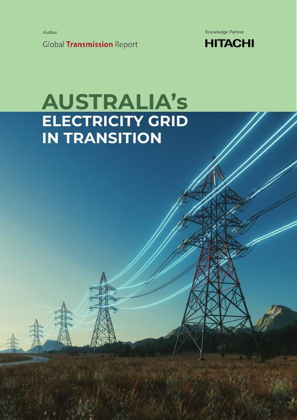
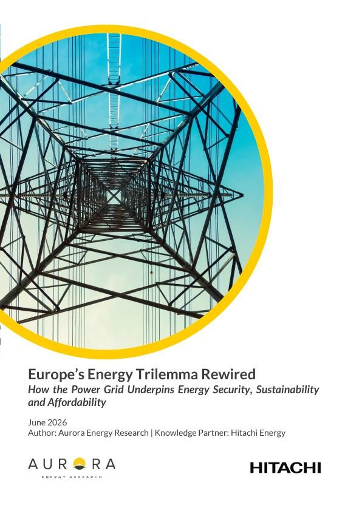
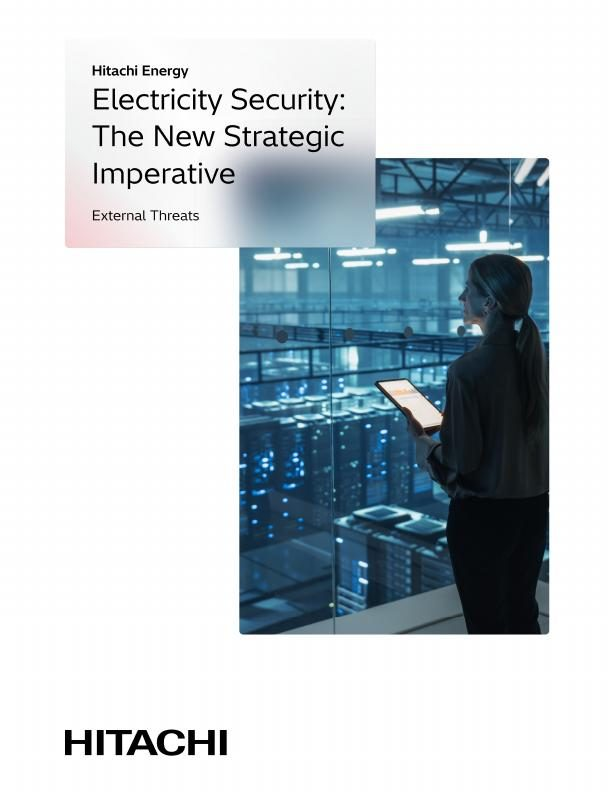
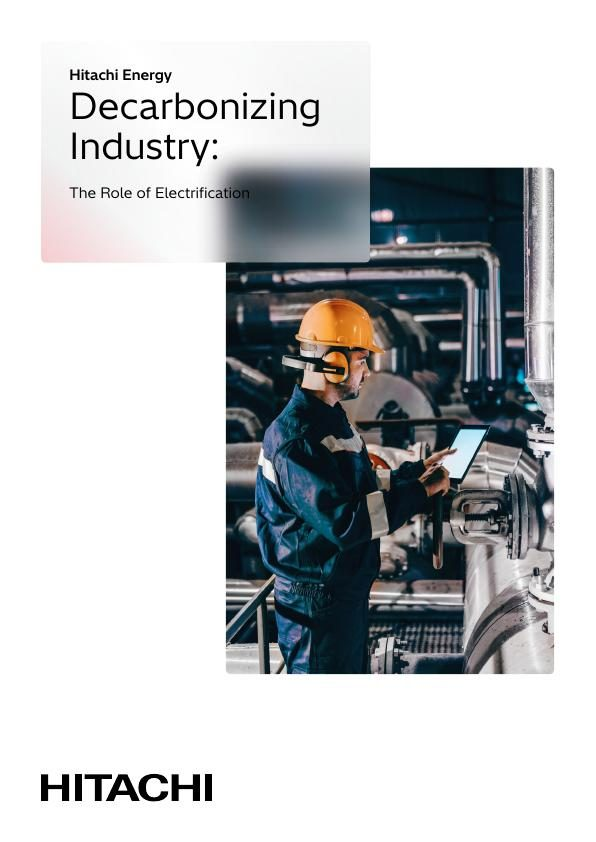
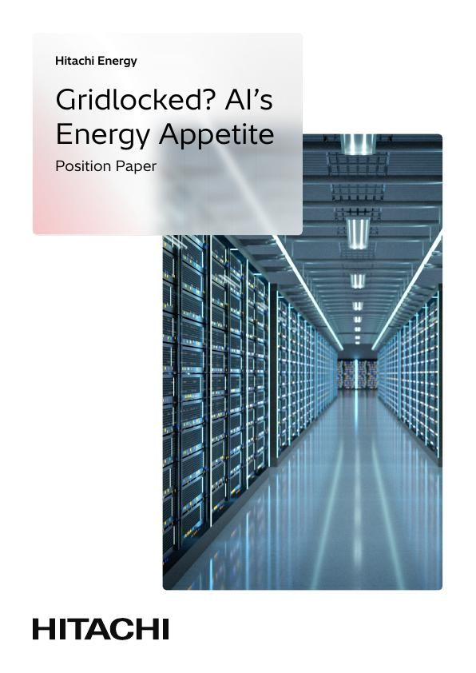
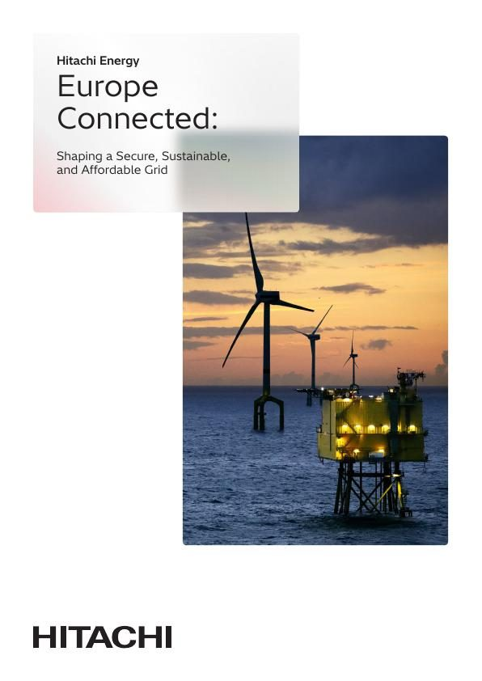

Los informes detrás de The Next 25
Trece publicaciones: cinco documentos de posición de Hitachi Energy, siete informes con Global Transmission Report y el Informe de Sostenibilidad. Cada página temática enlaza con los informes que la respaldan.

Redes en transición: Estados Unidos
La demanda de electricidad en Estados Unidos crece a un ritmo sin precedentes. Estrategias para mantener un suministro fiable, seguro y asequible.
Lee la historia →
Redes en transición: Europa
Cómo las nuevas tecnologías, los incentivos de mercado y las medidas políticas pueden lograr un sistema eléctrico seguro, sostenible y competitivo en Europa.
Lee la historia →
Energía para los centros de datos: Australia
Cómo una respuesta coordinada en generación, transporte, operación y diseño de mercado puede sostener el crecimiento de los centros de datos en Australia.
Lee la historia →
Indonesia: una red eléctrica en transición
Pocos países afrontan un reto energético tan trascendental como Indonesia. La oportunidad de transformar su red.
Lee la historia →
Australia: una red eléctrica en transición
La transición de Australia entra en una fase decisiva de ejecución, con el sistema transformándose tanto en la oferta como en la demanda.
Lee la historia →
El trilema energético de Europa, reconectado
Cómo una red interconectada, optimizada y ampliada sostiene la seguridad energética, la sostenibilidad y la asequibilidad en Europa.
Lee la historia →
Reforzar las cadenas de suministro de tecnología de red
Medidas necesarias para desbloquear el suministro de las tecnologías de red de las que depende la transición energética.
Lee la historia →
Gestionar la creciente complejidad de la red europea
Inversión en redes, planificación con visión de futuro y tecnología avanzada para gestionar la nueva complejidad de la red europea.
Lee la historia →
Seguridad eléctrica: el nuevo imperativo estratégico
La seguridad eléctrica es hoy un pilar central de la seguridad energética y exige una acción inmediata y coordinada frente a amenazas crecientes.
Lee la historia →
Descarbonizar la industria
Cinco recomendaciones para acelerar la electrificación industrial en el mundo.
Lee la historia →
¿Red bloqueada? El apetito energético de la IA
La capacidad de los centros de datos de IA crece entre 90 y 125 GW hasta 2030, lo que impulsa la demanda de hasta 1.400 transformadores de potencia.
Lee la historia →
Europa conectada
Hacia una red segura, sostenible y asequible: cinco acciones clave para el sistema eléctrico europeo.
Lee la historia →
Informe de Sostenibilidad 2026
Nuestras personas, nuestro planeta y cómo trabajamos: la edición de 2026.
Lee la historia →Los informes marcados como Global Transmission Report los publica Global Transmission Report con Hitachi Energy como socio de conocimiento. Todos los documentos se abren en la biblioteca de publicaciones de hitachienergy.com.